01CORN LEAF WEAVE粗线玉米叶编织 · 2mm
01CONCEPT / 悦己
完成它的人，
也完成了它的身份。
“悦己”从统一的法棍包比例出发，让天然编织、皮革结构与用户制作共同决定产品的最终形态。包袋不再只是已经完成的物件，而是留给使用者继续参与的开放系统。
Starting from a shared baguette proportion, the collection turns natural craft into a personal system of shells, inserts and handles.
- FORMAT
- Bag family + DIY system
- MATERIAL
- Corn leaf, raffia, leather, bamboo
- CONTRIBUTION
- Mobius form, sketch and material direction
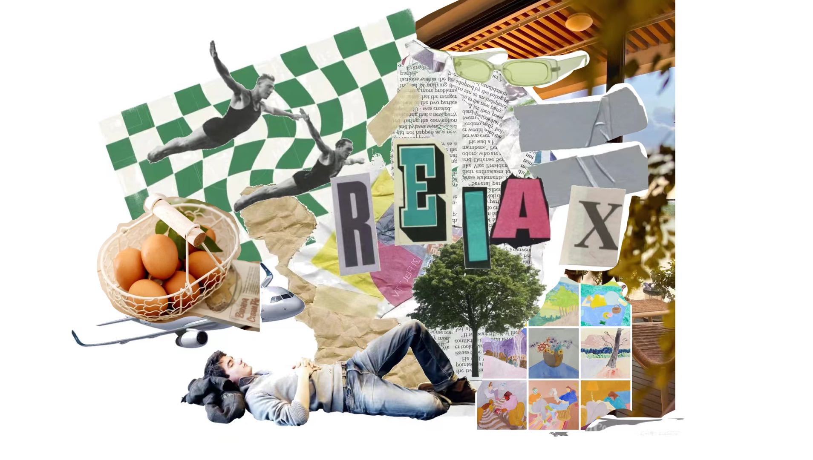
02THE NAKED BAG
从一个基础包型，
长出三种性格。
“裸包”保留开放的结构空间。外壳、内胆、提手和编织细节可以被更换，让同一个基础比例根据使用方式产生不同身份。
01
MOBIUS SHELL
Continuous leather shell × corn-leaf weave
SELECT A STRUCTURE01—03
ATMOSPHERE
03MATERIAL TOUCH
材料不是表面，
它决定如何触摸。
移动鼠标查看编织、皮革边缘与竹节提手。每一种材料都承担结构功能，同时保留天然的不规则感。
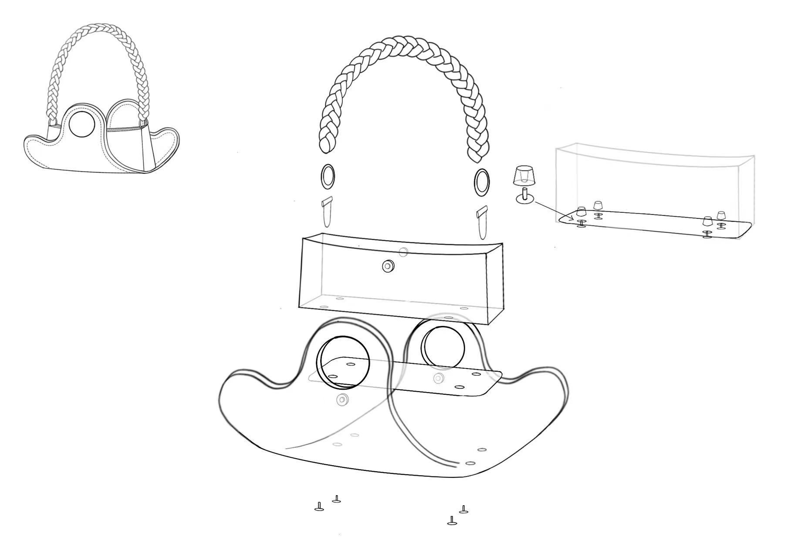
02RAFFIA + LEATHER可替换内胆 · 双层植鞣革
03BAMBOO HANDLE烧制塑形 · 天然竹节
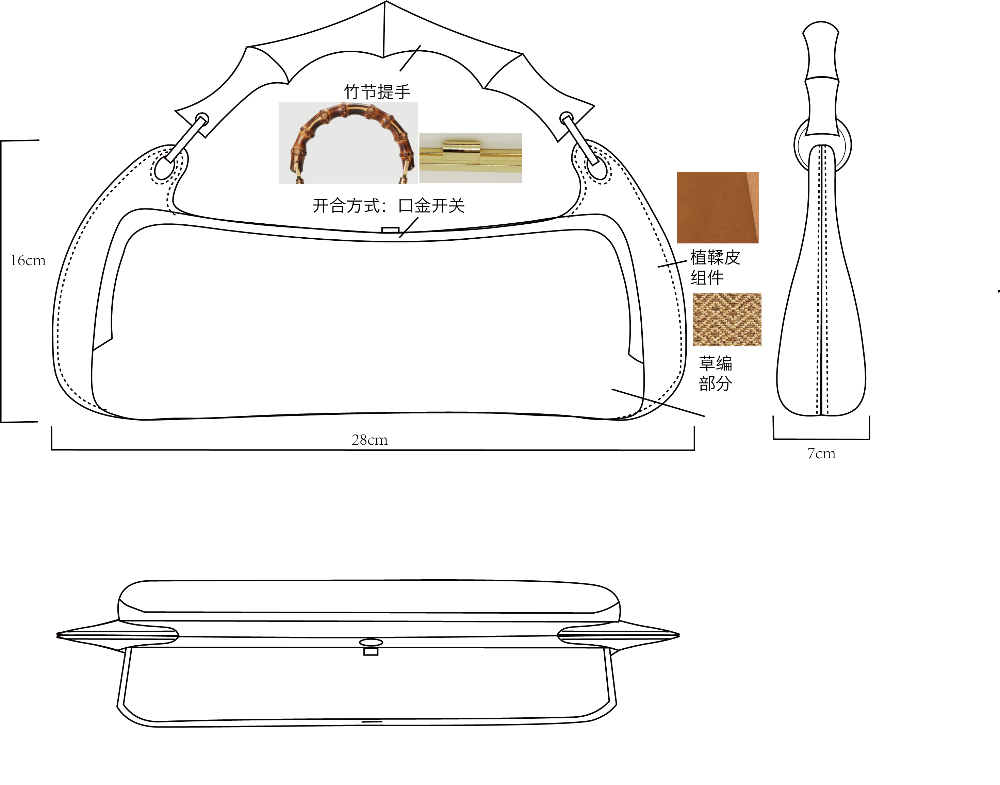
04METAL + JOINERY金属环 · 磁吸扣 · 螺丝钉
04THREE SELVES
同一比例，
三种结构语言。
向下滚动，三款包以各自的运动逻辑进入同一个系列。
Mobius Shell
连续皮革曲线包覆玉米叶草编内胆。莫比乌斯结构让外壳形成没有明确起点与终点的视觉循环。
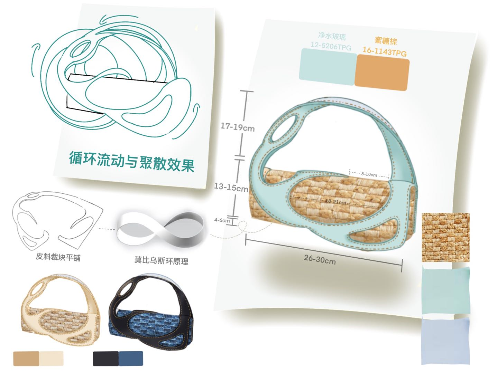
Heart Shell DIY
心形植鞣革外壳可以打开，使用者能够替换编织内胆，也可以放入自己制作的合适组件。
Bamboo Handle
竹节提手成为最直接的触觉识别，草编面板与皮革包边将度假感转化为清晰、可开发的产品结构。
PERSONAL DIRECTION01 / 03
MOBIUS SHELL
05SKETCH GARDEN
草图从噪音中，
慢慢长成系统。
移动光圈寻找不同阶段。点击任意图像可查看完整草图。
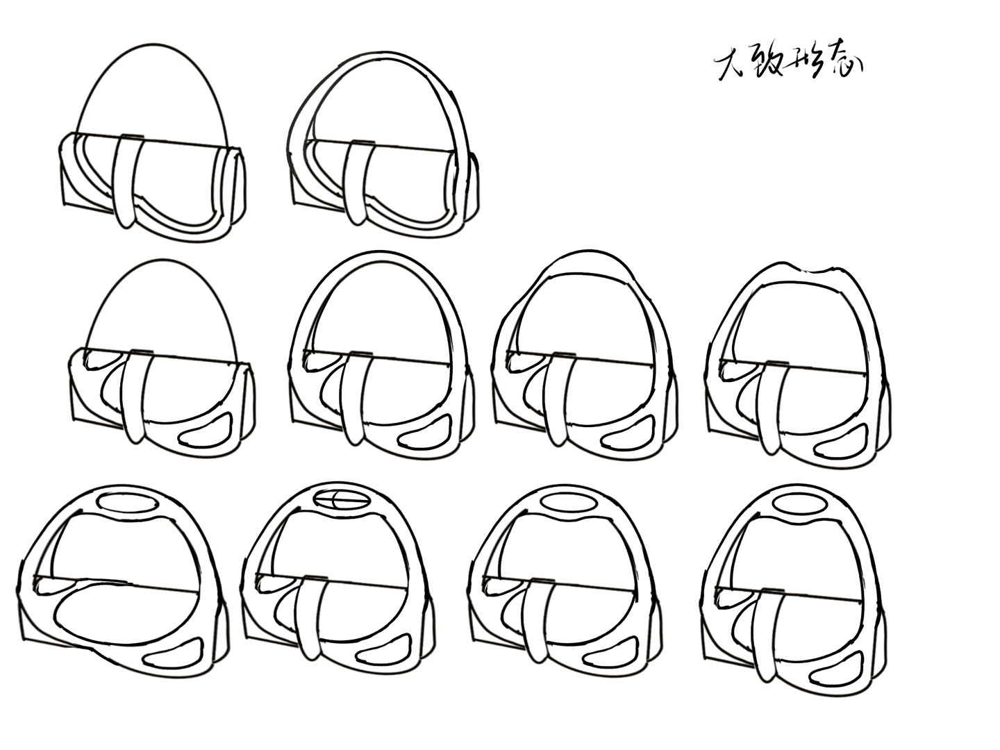
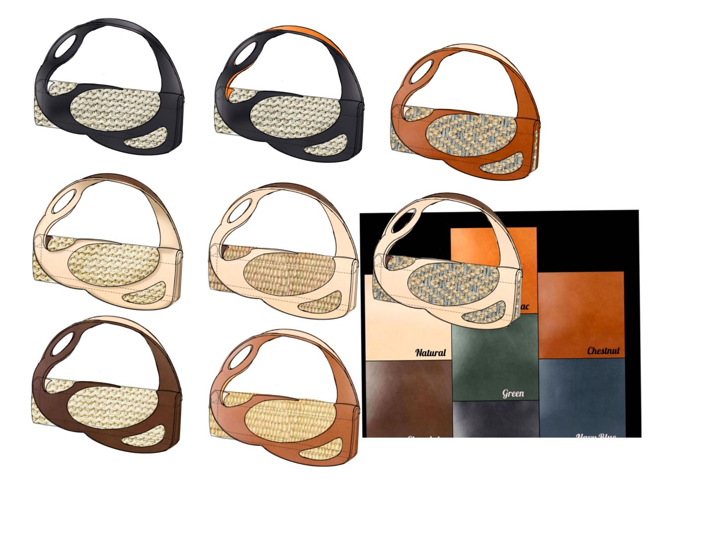
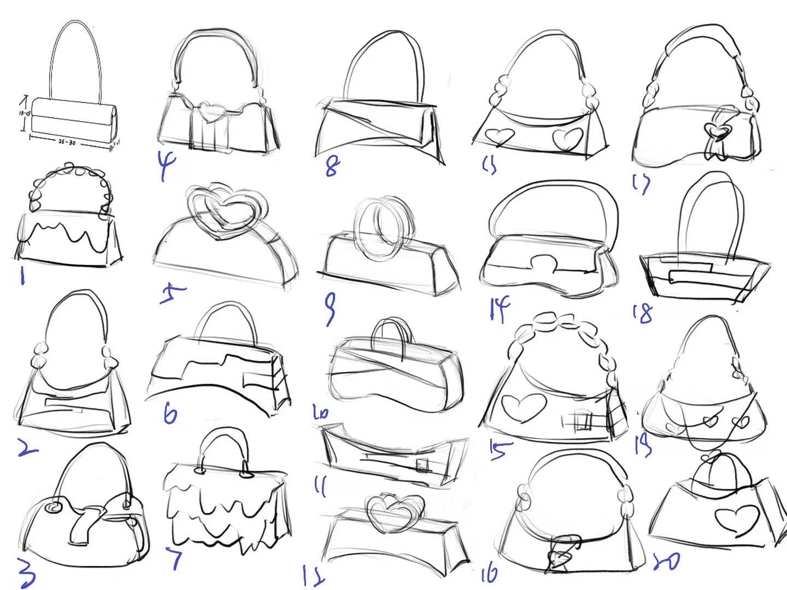
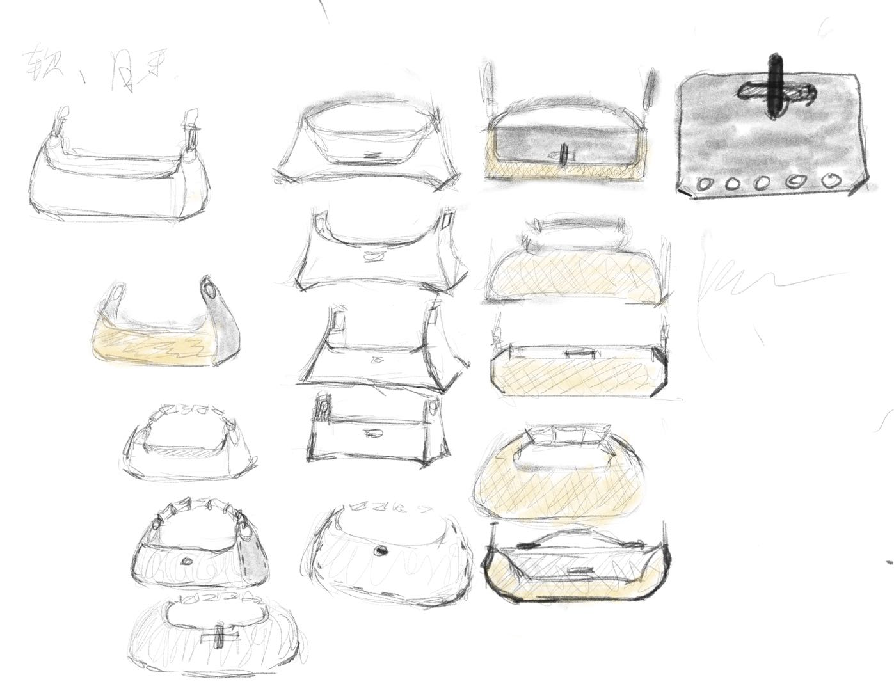
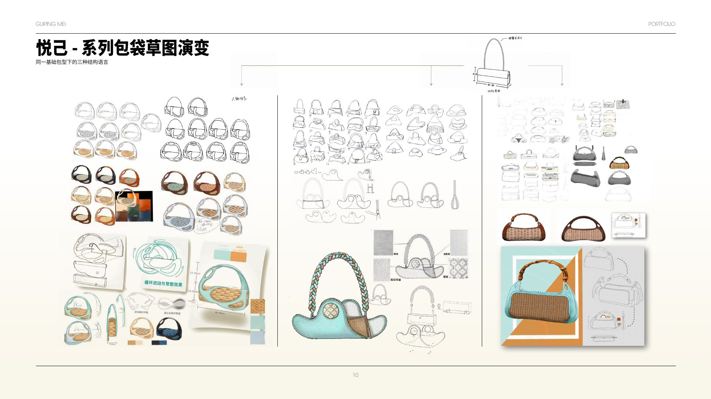
06FROM HAND TO AVATAR
从实体手作，
进入专属身份。
原项目将用户参与延伸到数字身份：选择、制作和收到产品之后，扫描包身可以获得对应的虚拟形象。此处呈现为项目系统提案。
- 01SELECT选择基础结构
- 02DIY组合编织组件
- 03CRAFT手工艺部分制作
- 04ASSEMBLE工厂结构制作
- 05CHECK成品检查
- 06RECEIVE用户收到产品
- 07AVATAR扫描生成虚拟形象
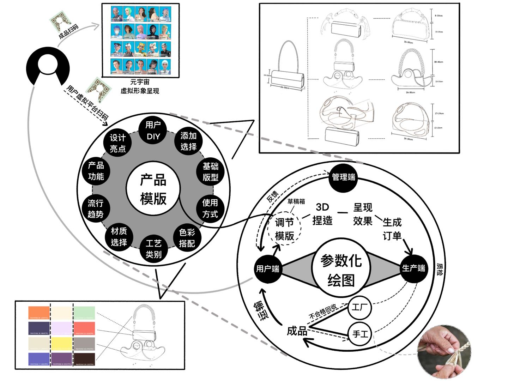
07TECHNICAL ARCHIVE
结构证据
尺寸、拆解、连接与配色让概念能够继续进入打样和产品开发。
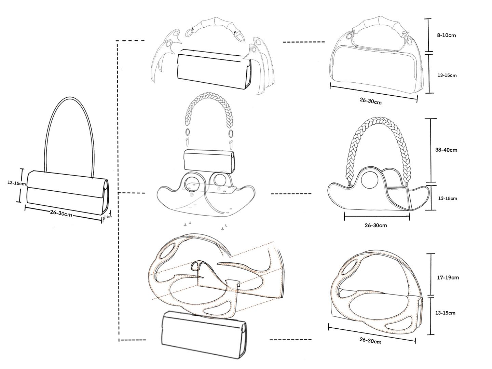
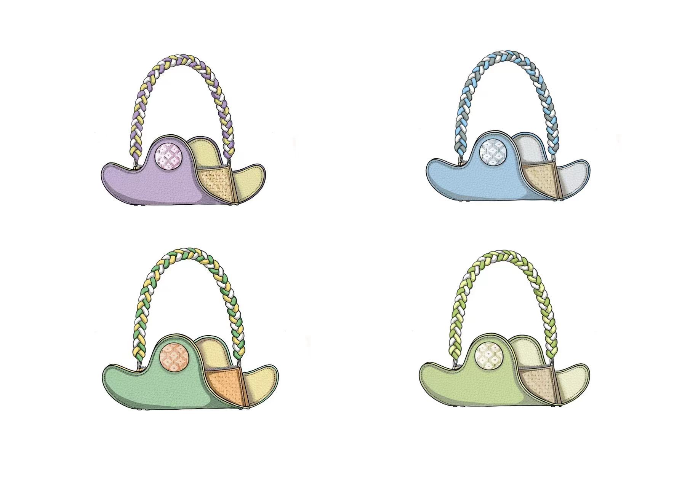
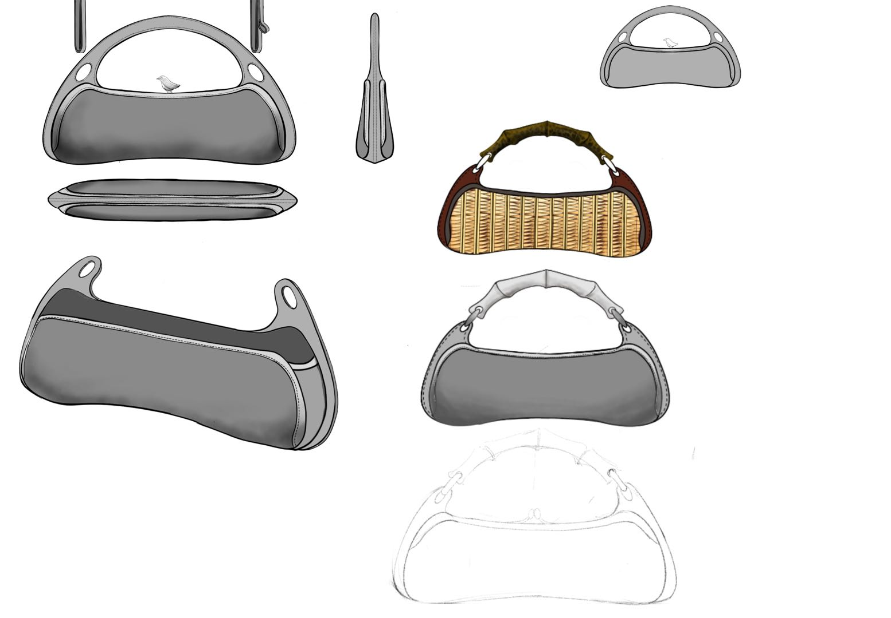
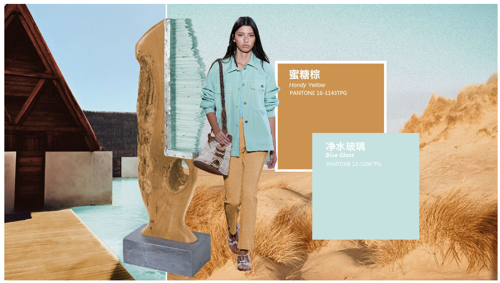
CHOOSE · MAKE · CARRY